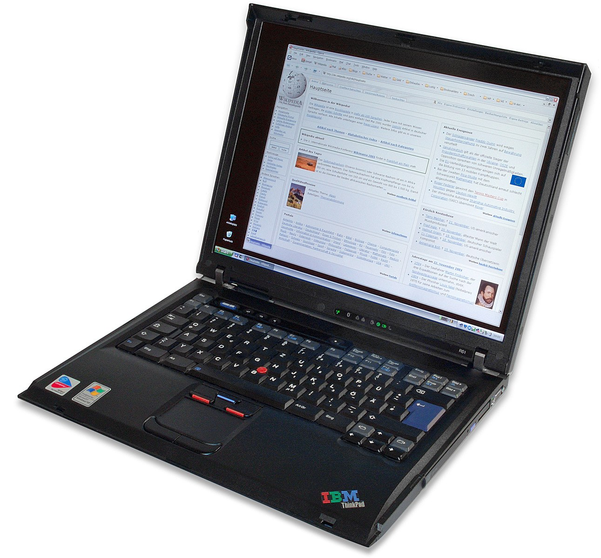

The Autopsy Report · Device #061
ThinkPad (entire line)
Thirty-plus years, hundreds of models, one black box with a red nub. The ThinkPad is a lineage, not a device — and this report explains exactly what a line-wide autopsy can and can't say.
What is this thing?
The ThinkPad isn't a device — it's a line of business laptops spanning more than three decades. The signatures: the black, boxy magnesium-and-plastic chassis, the red TrackPoint nub in the middle of the keyboard, and a reputation for keyboards people actually like. The name traces back to IBM's “THINK” slogan — the story goes that the first ThinkPad was a paper notebook stamped with it. Wikipedia · Broken Secrets
This report is deliberately different from the other 99: there is no single board to autopsy, no single FCC ID, no single chipset. What follows is the honest line-level story — plus exactly what a real board autopsy would require.
Not yet on our bench
Straightforward honesty first: BareBoard has not possessed, disassembled, tested, booted, or touched the firmware of this unit. We don't have one on the bench yet. Everything below is built from public records — FCC filings, manufacturer material, datasheets, manuals, and published teardowns — with every claim linked to its source and graded for confidence. When a fact genuinely requires our hands on hardware (boot logs, our own photos, exact board revision of a future unit), we say so out loud.
That framing is what makes publishing now legitimate: this is a public-records autopsy, and it will grow into a bench autopsy the day a unit lands on our desk.
A short history
- October 5, 1992IBM launches the ThinkPad line — the 700, 700C, and 700T — with the TrackPoint already in place. Wikipedia
- 1992–2004The IBM era: the line grows through the 600, T, X, and R series, cementing the black-box design language. Wikipedia
- 2005Lenovo acquires IBM's Personal Computing Division; the ThinkPad becomes a Lenovo brand. Wikipedia
- 2005–presentThe Lenovo era: X1 Carbon, P-series workstations, and the modern lineup — with Lenovo's own UEFI diagnostics (invoked with F10 on current models) replacing some of the old IBM tooling. Lenovo user guide
The outside
Across the decades, the constants: matte black, squared-off corners, the red TrackPoint, and (on most models) the three-button arrangement above the touchpad. Everything else — ports, hinges, materials — changes by series and year. Wikipedia

The board
There is no “the” board. A 1992 ThinkPad 700C and a 2026 ThinkPad X1 share a name, a color, and a pointing stick — and essentially nothing else electrically. Across the line you'll find Intel and AMD processors, dozens of chipsets, soldered and socketed RAM, spinning disks through NVMe — but no line-wide board, chipset, memory, or storage configuration exists to document. A meaningful board autopsy requires one exact machine type and model (the seven-character code on the bottom sticker), and this report doesn't have one on the bench.
What is line-wide and verifiable: the TrackPoint (a strain-gauge pointing stick, present since 1992), the ThinkLight keyboard light on many classic models, and the docking connectors that ran through generations of the line. Wikipedia
Under the microscope: the chips
There is no chip table for a product line. Confirmed and Likely both require a specific device — and “every ThinkPad ever” is not one. Naming any chip here as “the ThinkPad's” would be fabrication. When a single machine type lands on our bench, it gets its own full autopsy with its own chip table.
What the historical record does support at line level: the line has shipped with processors from IBM, Intel, and AMD across its life, and wireless radios whose FCC IDs belong to the exact machine type and installed radio — never to the line as a whole. Wikipedia
The government's file on this device
There is no line-wide FCC ID. Every ThinkPad's wireless authorization is tied to its exact machine type and the installed radio module — the FCC grants live on the radio, not on the brand. If you want the government's file, read the seven-character machine type off the bottom sticker and look that up; that's the real unit of analysis, and it's how we'll do it when a specific machine reaches the bench.
Debug & service modes
Our posture: we listen, we don't knock. Only publicly documented, user-facing service behavior.
UEFI diagnostics (current Lenovo models). On current ThinkPads, Lenovo documents a built-in diagnostics tool invoked by pressing F10 during boot — it tests memory, storage, and other hardware without an OS. That's ordinary, vendor-documented, user-facing service functionality. We don't imply every ThinkPad ever made uses it — the tooling has changed across the line's history. Lenovo user guide
What we don't do: no BIOS-password bypass, no Computrace/anti-theft defeat, no supervisor-password removal, no firmware extraction. Those are locks, and we don't pick locks.
What the public record says
A lineage, not a specimen. The honest finding of a line-wide autopsy is that the interesting questions — which board, which chips, which radios — only have answers per machine. The line-level story is industrial design, the TrackPoint, the IBM-to-Lenovo handoff, and three decades of business-laptop continuity. Wikipedia
The most-wanted list starts here. If you own a specific ThinkPad and want its board autopsied, the machine type on the bottom sticker is the ticket — that's the unit we'd put on the bench.
What we didn't do
- We have not possessed, disassembled, tested, or booted this device.
- We have not extracted, modified, shared, or reverse-engineered its firmware.
- We document only publicly verified interfaces and user-facing modes — read-only, no lock bypass, no authentication defeat, no credential or key material.
- Anything below marked as unknown stays unknown until the bench says otherwise.
By the numbers
- Line launched: October 5, 1992 (IBM) · Lenovo era from 2005
- Maker: IBM 1992–2004 · Lenovo 2005–present
- Line-wide FCC ID: none exists — authorizations are per machine type and radio
- Line-wide chipset: none exists — varies by model and year
- Constants: black chassis, red TrackPoint, business focus
Words to know
Every term this page uses, in plain English. No prior knowledge required.
- Machine type
- The seven-character code on a ThinkPad's bottom sticker — the exact model identity. This is what FCC filings and parts lists key on.
- TrackPoint
- The red nub between the G, H, and B keys — a strain-gauge pointing stick, a ThinkPad signature since 1992.
- UEFI diagnostics
- Built-in hardware tests that run before the operating system loads — Lenovo documents them for current models.
- FCC ID
- The ID the FCC assigns to each approved wireless product. For ThinkPads it belongs to the specific machine and radio, not the line.
Sources & confidence
- Line launch October 5 1992, IBM era, Lenovo acquisition 2005, design language, TrackPoint: Wikipedia's ThinkPad article — Likely.
- Name's link to IBM's THINK paper notepads: Broken Secrets — Likely.
- F10 UEFI diagnostics on current models: Lenovo's own user guide — Confirmed as vendor documentation for those models; not implied for the whole line.
- No line-wide FCC ID, board, chipset, or service mode: a structural fact of how the line and the FCC work — stated as such, not as a gap in our research.
- Anything not listed here is unknown until the bench says otherwise. We'll say so, out loud, when that's the case.
Serial numbers and QR codes are blacked out of every published photo. Raw originals stay private.
Legal note. BareBoard is an educational project. Everything on this page comes from public records — FCC filings, manufacturer material, datasheets, and published teardowns — plus our own analysis of those records. We don't publish, host, or distribute firmware, keys, passwords, or credentials. Product names and trademarks belong to their respective owners and appear here only to identify the hardware. If you believe anything here infringes your rights, contact us and we'll address it promptly.